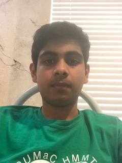
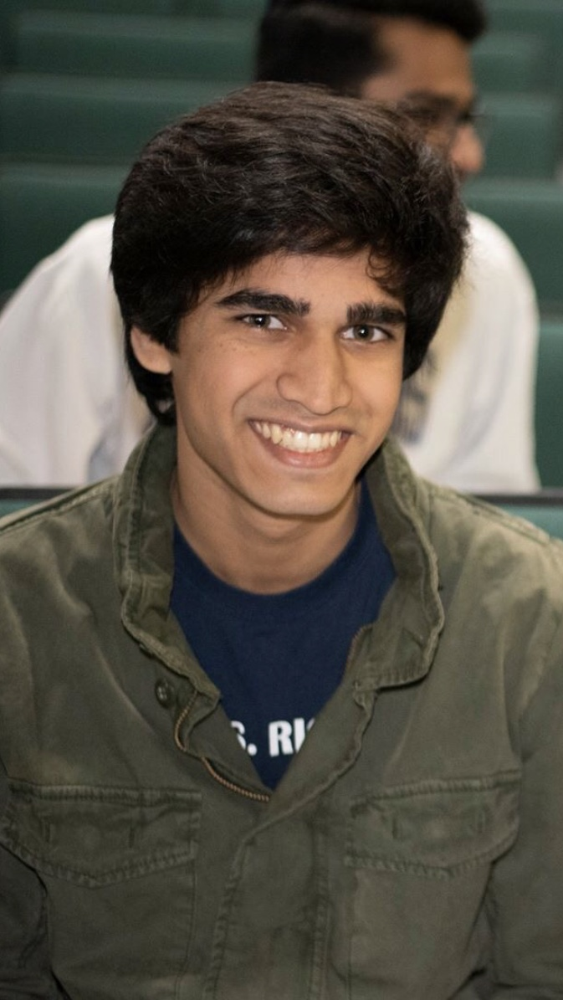
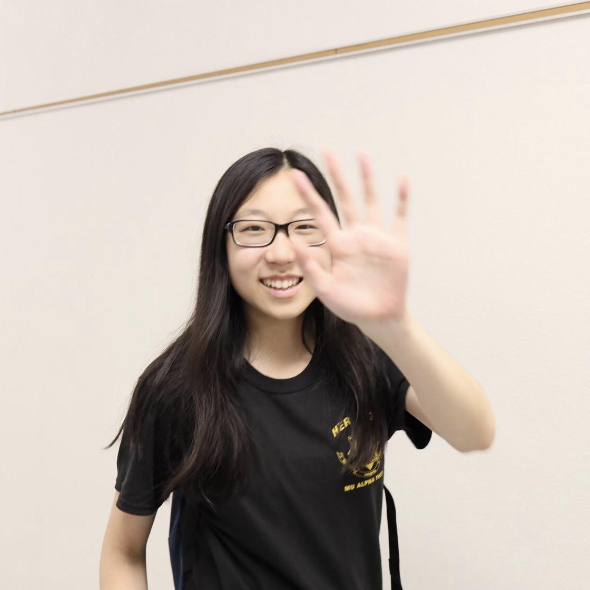

Meet the Officers
William Li:
Co-President, Curriculum Committee

William Li is a senior at King High School. He began competing in Mathcounts in middle school, and he has been a part of FLSAM since eighth grade. William's favorite problems in math are geometrical ones, particularly when the problems involve a coordinate system. When not doing math, he spends his time swimming, playing cello, and losing at chess. William is looking forward to future FLSAM activities and competitions.
Yuru Niu:
Co-President, Curriculum Committee

Yuru is a senior at Suncoast High School. He started doing math competitions in 4th grade starting with FAMAT Algebra 1 and AMC 8. Since then, he participated in numerous math competitions. He discovered FLSAM in 8th grade and got exposed to even more math competitions like PUMaC and HMMT, which gave him lots of enjoyment. His favorite parts of math are combinatorics. He has been inspired to write problems after many of his friends in the math community have come up with interesting problems. In his spare time, when he is not doing math, one usually finds him playing Clash Royale or surfing Reddit.
Connor Gordon:
Vice President and Chair of Curriculum Committee
Connor Gordon is a senior at American Heritage Plantation. Ever since he attended his first ARML in his sophomore year, he has fallen in love with FLSAM, it's amazing members, and the wonderful opportunities it has provided. Connor's favorite types of math are combinatorics and calculus, but he likes almost every subject other than arithmetic (the hardest part of math competitions). He enjoys both writing his own math competition problems and teaching competition math to younger students. Outside of math, Connor enjoys video games, listening to music, spending time with friends, occasionally reading a book, and going on long bike rides.
Vismay Sharan: Vice President of Competition, Curriculum Committee

Vismay Sharan is a junior at Atlantic High School. He began competing in Mathcounts in sixth grade... at the school level. Two years later, he was invited to join FLSAM. Since then, he has participated in many math competitions in and out of FLSAM, including ARML, FAMAT, and USAJMO. He loves FLSAM and the opportunities such a club offers. Vismay enjoys all of math (except maybe functional equations) but finds geometry unique in its beauty. Besides doing math, he spends his time swimming, sleeping, and losing at chess. Vismay is looking forward to participating and helping in future FLSAM activities and competitions.
Rayyan Darji:
Region 1 Coordinator

Rayyan Darji is a senior at James S. Rickards High School. He joined FLSAM in 9th grade and has loved the competitions and experiences that the organization has enabled him to be a part of. He also actively participates in a variety of other math competitions throughout the year including FAMAT and AMC. Rayyan’s favorite branch of math is geometry and he loves to write and solve problems and ponder over them for extended periods of time. When he is not doing math, Rayyan enjoys watching and playing various sports, watching Bollywood movies, taking random trivia quizzes, and eating spicy food.
Jeannie Wang:
Region 2 Coordinator

Jeannie is a senior at Stanton College Prep. Her first exposure to competition math was in sixth grade when she competed at the chapter level Mathcounts competition. Since then, she has learned many mathematical topics but maintains an interest in number theory. She has expanded her interest in mathematics by joining FLSAM, coaching competitive math, and by trying to spread the math interest in the Jacksonville area. When she is not doing math, she can be found sleeping, watching tasty videos, or playing her two favorite sports: lacrosse and karate.
Divij Lankalapalli:
Region 3 Coordinator

Divij Lankalapalli is a junior at Seminole High School. He began participating in math contests in 4th grade and has since competed in Mathcounts, FAMAT, AMC, AIME, and USAMO. He joined FLSAM in tenth grade and is glad to have had the opportunity to meet like-minded individuals who share one of his greatest interests. Divij also enjoys teaching others both curriculum and competition math. When he isn’t solving math problems, he can be found sleeping, watching TV, or spending excessive amounts of time on Desmos.
Michael Marcotte:
Region 4a Coordinator

Michael is a senior at Largo High School. He’s been competing in math competitions since 5th grade and joined FLSAM in 9th grade. Michael has a small brain, so his strongest point is solving many simple math problems in a super-condensed time period. He also thinks he’s okay in physics now because got the same score on F=MA as he did on all the physics AP exams. Michael enjoys casually playing unranked League of Legends (he’s been scared of the ranked ladders for 5 seasons), losing games of Bed-Wars when Dhruva intentionally throws, and staffing an anime Minecraft server.
Jordan Hochman:
Region 4b Coordinator

Jordan Hochman is a junior at the Community School of Naples. He has participated in Math Counts, FAMAT, AMC, AIME, and any other math competition he is able to go to. He likes all types of mathematics and does not have a favorite area. Jordan likes to tutor other students in math and computer science in his free time. When he is not doing math, he loves solve different types of Rubik’s cubes, play Rocket League, program in python and java, and play piano.
Carol Jiang:
Region 5a Coordinator

Carol Jiang is a senior at American Heritage School. She was first introduced to FLSAM as a freshman, participated in various competitions since 6th grade, and enjoyed doing math for as long as she can remember. Apart from math, Carol spends her time listening to music, laughing at something stupid, or playing whatever game she’s currently addicted to. She looks forward to spreading FLSAM in her region and meeting new mathletes.
Leonardo Jha Bonanno:
Region 5b Coordinator

Leonardo Jha Bonanno is a third-year student at Gulliver Preparatory School. He is the president of Mu Alpha Theta, the physics club, and the science competition club at his school. He joined FLSAM after hearing about it from former FLSAM officer Faraz Masroor. He has competed in various math competitions including AMC, Mu Alpha Theta, David Essner, and the University of Miami Undergraduate PSC. His favorite branches of mathematics are mathematical physics and differential geometry. When he is not solving problems or studying, he enjoys listening to music, tutoring at his local elementary school, and attending speedsolving competitions.
Vismay Sharan:
Curriculum Committee

Vismay Sharan is a sophomore at Atlantic High School. He began competing in Mathcounts in sixth grade... at the school level. Two years later, he was invited to join FLSAM. Since then, he has participated in many math competitions in and out of FLSAM, including ARML, FAMAT, and USAJMO. He loves FLSAM and the opportunities such a club offers. Vismay enjoys all of math (except maybe functional equations) but finds geometry unique in its beauty. Besides doing math, he spends his time swimming, sleeping, and losing at chess. Vismay is looking forward to participating and helping in future FLSAM activities and competitions.